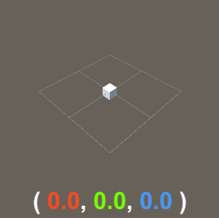
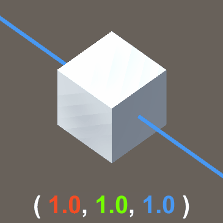
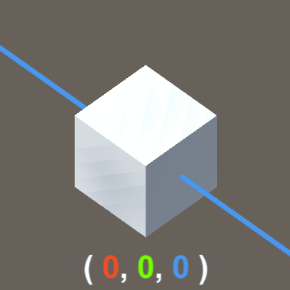
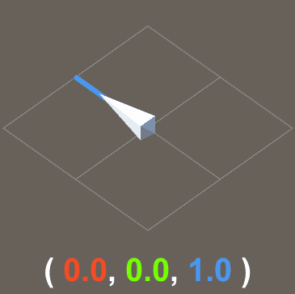
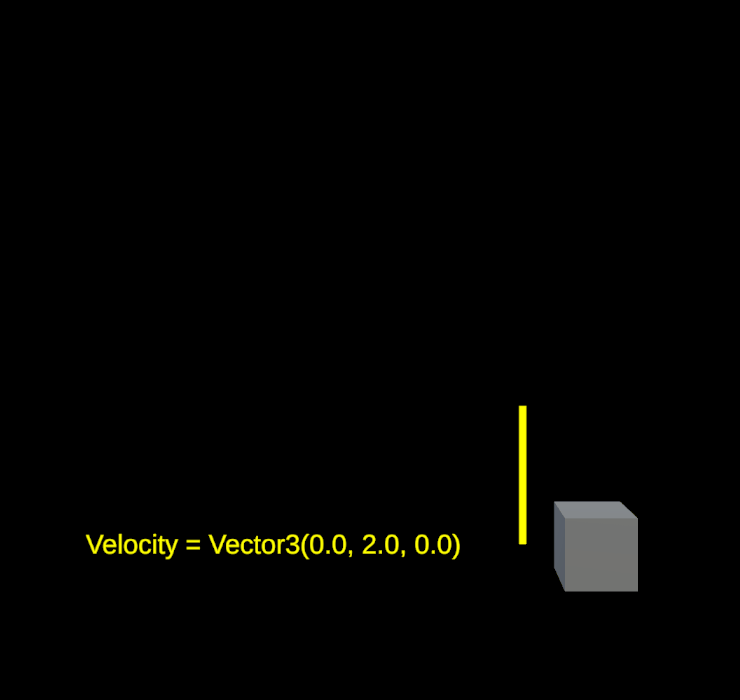
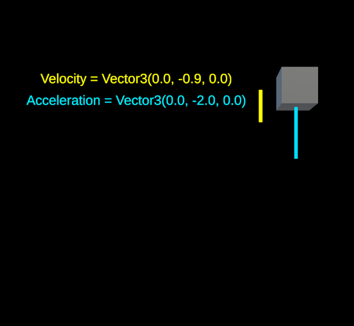
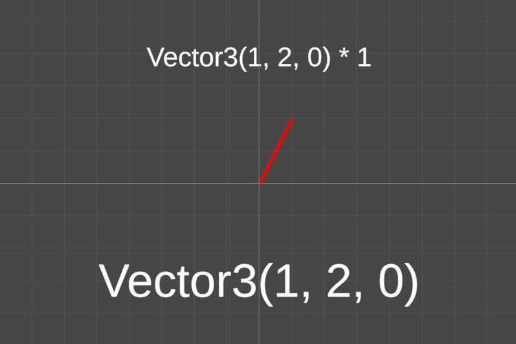
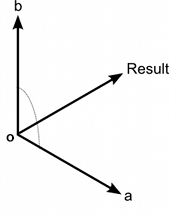
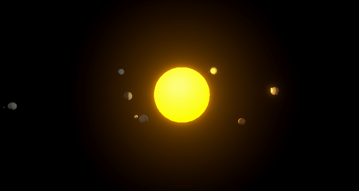

Transforms and Vectors
Before we begin...
Review from last class
- GameObjects and Components
- C# Variables and Functions:
- How to declare and initialise a variable?
- How to write and call a custom method function?
- Event functions --
void Start()andvoid Update()
Exercise from last class
Can you write a script that forces a GameObject to start at a specific position in the scene?
Transforms
Read about Transforms in the Unity Manual.
Every GameObject has a Transform component, which can be accessed via scripts using gameObject.GetComponent<Transform>() or gameObject.transform.
Using the Transform component, you may access the following properties:
- Position, Rotation, and Scale
- Parent-Child Hierarchy
- Global and Local Transforms
Vectors
Read about Vector3 in the Unity Manual.
A vector is a group of numbers -- a 2D vector contains two values (x, y), and a 3D vector contains three values (x, y, z).
In Unity, 3D vectors are represented by a data structure called Vector3, which contains three float values represented by x, y, and z respectively.
Vector3(float x, float y, float z)
When handling spatial and directional information in three dimensional contexts, we are typically working with Vector3 data structures.
Vector3 variables and properties
To declare and initialise a Vector3 variable:
Vector3 someVector = new Vector3(2,4,5);
// "Vector3" on the LEFT declares what type of variable "someVector" is;
// "new Vector3()" on the RIGHT acts as a constructor method
// that creates and initialises a new Vector3 with xyz-values (2, 4, and 5).
Note: Even in 2D projects, transform properties are still stored as Vector3 data. In this context, you could choose to declare Vector3 variables in this way:
someVector = new Vector3(2,4);
// which is the same as "new Vector3(2,4,0)" (ie. z-value is 0)
To access x, y, and z components of a Vector3:
Debug.Log(someVector.x);
Debug.Log(someVector.y);
Debug.Log(someVector.z);
In Unity, you can also use shorthands for calling specific 3D vectors.
Vector3.zero //Vector3(0,0,0)
Vector3.one //Vector3(1,1,1)
Vector3.forward //Vector3(0,0,1)
Vector3.right //Vector3(1,0,0)
Vector3.up //Vector3(0,1,0)
//etc.
Using Vectors in Unity
Vectors can represent position, scale, rotation, and direction of an object in space, relative to X, Y, and Z axes.
Position
Vector3 as spatial coordinates. Origin is at (0,0,0).

Scale
Vector3 as relative scale.

Rotation
Vector3 as rotational configuration.
In Unity, rotation values are internally processed as Quarternion values, which are more convenient for the computer to work with. In the inspector, we are reading eulerAngle representations of rotation in degrees along the X, Y, and Z axes.

Direction
Vector3 as relative direction.


Vector Math Operations
Addition (+)
Make an object move at a given velocity
position += velocity * Time.deltaTime;

Make an object move at an accelerated velocity
velocity += acceleration * Time.deltaTime;
position += velocity * Time.deltaTime;

Make an object (e.g. camera) follow another object at a given offset
Usually it's easier to do this by parenting one object to another, but sometimes that configuration just doesn't work for your purposes...
In that case, you may consider using vector math!
Unity's Roll-a-ball tutorial uses a similar technique for setting up a camera that follows the player object.
//LateUpdate is another event function
//that is called every frame, but after Update()
void LateUpdate()
{
//follow target position at offset
//AFTER target position changes in Update()
gameObject.transform.position = target.position + offset;
}
Spawn objects at regular intervals
We'll discuss this next class when we get into arrays and instantiation!
Subtraction (-)
Determine direction from one point to another
fromAToB = B - A;
//and if we just need the unit of this direction vector
//we can normalize it.
unitDirection = fromAToB.normalized;
Determine the distance between 2 points
fromAToB = B - A;
float distanceAB = fromAToB.magnitude;
//OR we can use the Vector3 method "Distance()"
float distanceAB = Vector3.Distance(A,B);
Multiplication (*)

Scale the size / length of a vector
someVector *= multiplier;
Flipping a vector's direction
someVector *= -1;
Normalizing Vectors
Normalized vectors always have a magnitude of 1. This is useful for when you're using vectors only for its directional orientation.
normalizedVector = someVector.normalized;
Dot Product
Read about Vector3.Dot in the Unity Manual.
Dot product is useful for comparing the directions of two different vectors.
float dotProductAB = Vector3.Dot(A,B);
if (dotProductAB==0){
//A and B are perpendicular
} else if (dotProductAB==1){
//A and B are pointing in exactly the same direction
} else if (dotProductAB==-1){
//A and B are pointing in completely opposite directions
}
Cross Product
Read about Vector3.Cross in the Unity Manual.
Cross product can produce a new vector that is perpendicular to two vectors.

Vector3 OA = A - O;
Vector3 OB = B = O;
Vector3 crossAB = Vector3.Cross(OA,OB);
//crossAB is perpendcular to both vectors OA and OB.
Other vector methods that may be useful
In-class Exercise
In Unity, build a solar system in orbit with a sun, planets, and moons... and only use scripts for animations!
(Hint: Try using RotateAround().)

Exercise for next class
How do we make a solar system that dynamically generates at the start of the scene:
- a random number of planets and moons;
- a material that lerps from one color to another depending on its distance from the Sun;
- a set distance interval between each consecutive sibling planet?
Some course reminders
- Fill up the preliminary course survey, if you haven't already.
- Reading Response 1 is due next class.
- Sign up for Homeplay 1!